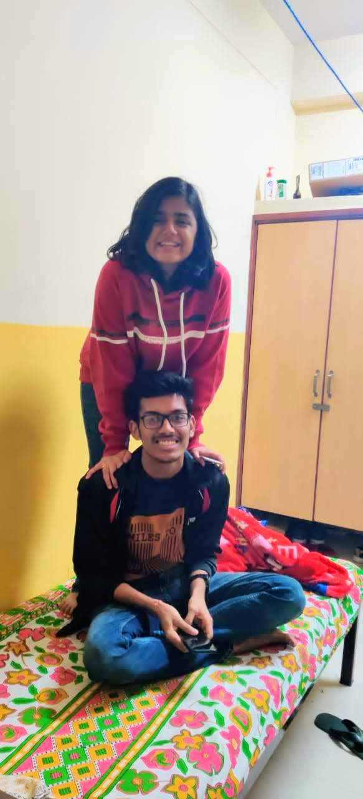
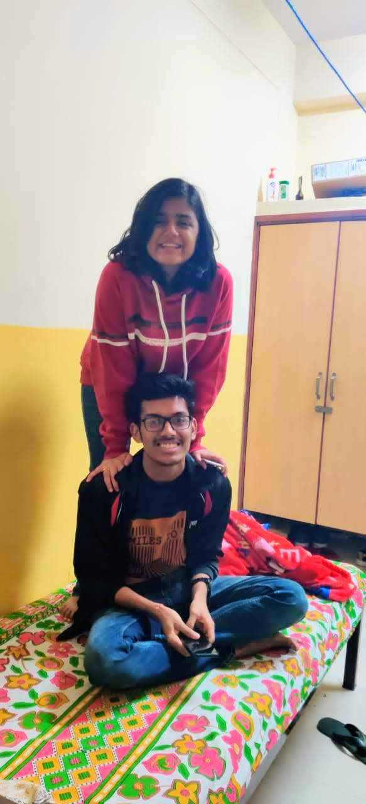

2) War Day
War day ka mtlb sch mei war day nhi h😂. Iss war movie ke din se apni dsti start hui thi. Yaha se mri zindagi mei ek doraemon aaya😂. I dont know how our frndship just started that day but I am happy that it started. Picture name was war but its effect was just opposite , we just became frnds on war😂. Aisi hi do teen baar ar chlenge movies dkhne ar haa horror movie bhi dkhne chlenge , tujhe darane mei bda maza aayega😂
 
